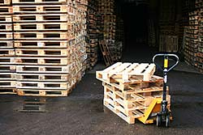

ООО «СтэлсПоддон» - компания, которая начала свою деятельность по покупке поддонов более 10-ти лет назад. Сегодня мы гордимся сотрудничеством с ведущими (в том числе и европейскими) производителями, а также с розничными организациями, осуществляющими изготовление качественной тары, имеющей все необходимые сертификаты и соответствующей всем мировым и российским требованиям.
Мы осуществляем покупку поддонов на максимально удобных для нашего клиента условиях. Взаимовыгодные партнерские отношения – залог успеха работы ООО «СтэлсПоддон».
Позвоните нам, если в Вашей компании снизились поставки или Вы закрываете производство, осуществляя продажу поддонов, и Вам негде хранить неиспользуемые паллеты размеров 1200х800 и 1200х1000 четырехзаходные под рохлю.
Стоимость товара будет определена в зависимости от состояния поддонов, ГОСТа, в соответствии с которыми они были произведены и размера. Мы принимаем поддоны деревянные б/у, цена которых соответствует их потребительским характеристикам и рыночной ситуации. Подробные условия покупки продажи поддонов Вы сможете уточнить у наших операторов. Проконсультироваться можно по телефону: (495) 740-30-30 Наталья Геннадьевна.
Оформить заказ очень просто! Просто отправьте нам на почтовый адрес stelspoddon@yandex.ru письмо-заказ с реквизитами.
Наша компания располагает не только собственными складами, но и автотранспортом, позволяющим отгружать паллеты с Вашего склада в предельно короткие сроки.
Сейчас у нас проводится специальная акция:
ООО "СтэлсПоддон" готова купить поддоны по выгодным для Вас ценам.
| Сорт | ОПИСАНИЕ | ЦЕНА |
|---|---|---|
| Высший | Светлый поддон б/у идентичный новому с клеймом EUR | 200 рублей |
| I сорт | Светлые поддоны б/у с клеймом EUR | 160 рублей |
| Аналог поддона с клеймом EUR, но без клейма | 150 рублей | |
| II сорт | Серые поддоны с клеймом EUR | 130 рублей |
| III сорт | Темный или крашеный поддон б/у | 100 рублей |
| Поддоны грузоподъемностью 1500 кг., 1200х800 | от 80 рублей | |
| Поддоны 1200х1000 | от 70 рублей | |
| Поддоны 1200х1000 с переплетом | 80 рублей | |
| «Хлипкие» с бруском 5х7 см. | 50 рублей |
Продать поддоны можно, написав на stelspoddon@yandex.ru или сделав звонок тел: 8(925)740-30-30.